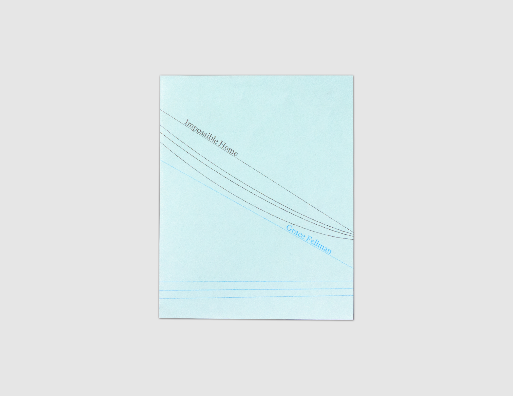
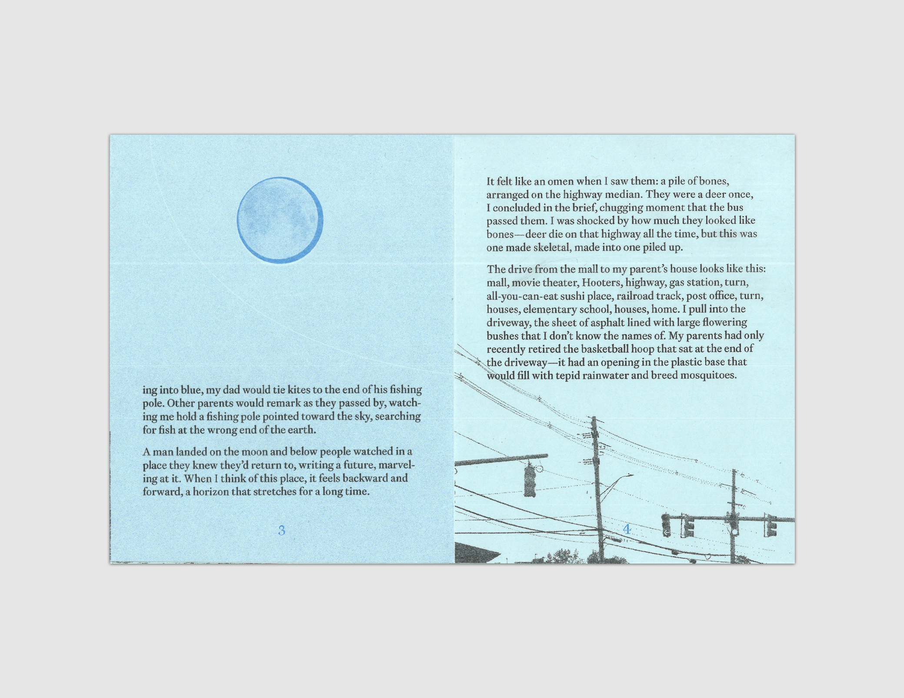

Impossible Home
by Grace Fellman
$5
Shop
- 2022
- 5x4in
- 6 pages
- 2-color riso
- Printed on French paper
- 8-fold zine
- Edition of 250, 2nd edition
A classic 8 fold zine about suburban landscapes and the terrifying knowledge they hold.
Each moment in these eight pages exists in the quiet, luminous, and awe-inspiring landscapes of suburbia: from backyards to strip malls, in photo albums and on television sets. A lyrical meditation on the places and people that predate predate and predict us.
Grace Fellman is a writer and strategy-led creative. She holds a BA in English Literature and Nonfiction Writing from Washington University in St. Louis and is from New Jersey, just like Bruce Springsteen.

